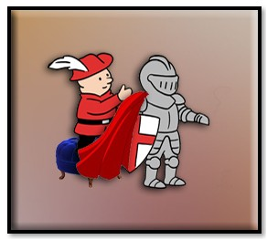
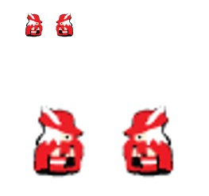
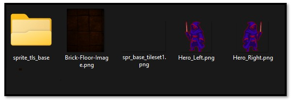
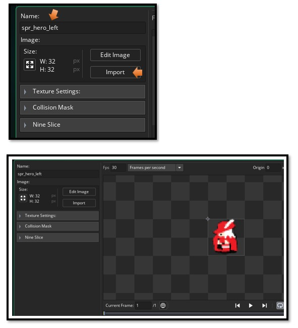
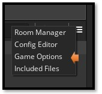
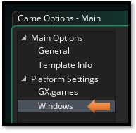
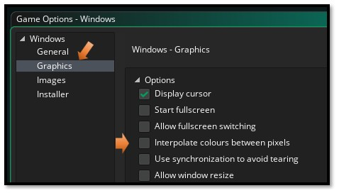

~Preparing Hero for Room~
1/26/2026

Well, last week, you saw how we can bring our floor in, first as a sprite, then turn it into tile set. This week we will work on bringing our hero in.
In our first tutorial for this series, we create a sprite, and yes, we could use that pitiful one for our game, but…
So, instead we will create a new hero that we can bring in. 64px X 64px

Bring your Sprite into your sprite folder, from windows explorer and outside of your game. Find your folder here. Move your hero sprites in
C:\Users\User-Name\GameMakerProjects
 Now you need to bring this sprite into the Game. Because you have only brought it into the folder. You must bring it into the game using a Create method, because game maker will create its own folders of stuff that is needed to be used in the game.
Go to the Asset Browser, on the right side of the app. Go down the list until you find the sprite folder. Right click on the Sprite folder.
Create - Sprite
You will want to hit the import button here to import the sprite you added to your folder. After importing, you will see the sprite listed in this section. Make sure you give your sprite a name. Here we named it sprite_hero_left
We put the red outline around him so that he was more visible inside of the room with the dark floor.

You want to do the exact same thing you did for the left facing hero, but this time bring in the Right facing hero.
To sharpen the image
At this small size it can be sharpened a bit, unfortunately like a lot of Game Maker stuff, the steps you have to take to find it is extensive.
Look on the right side of your app. Where your Asset Browser is. You will find that 3- line hamburger menu. You want to click that menu.

Select Game Options.

To move to the correct panel, you must actually click directly on the word Windows here.

Click on Graphic here, and then uncheck the box that says Interpolate colors between pixels.

Your Sprite is only the face of the hero
Think of the sprite as a visual mask—it shows how the hero looks, but it isn’t yet the hero itself. Normally, I would explain how to turn a sprite into an object at this stage. However, because our hero will eventually need four sprites (front, back, left, and right) to move in all directions, we’ll pause here. Later, we’ll combine all those sprites and behaviors into a single hero object. For now, let’s shift focus to preparing the room, which I’ll guide you through in the next section.